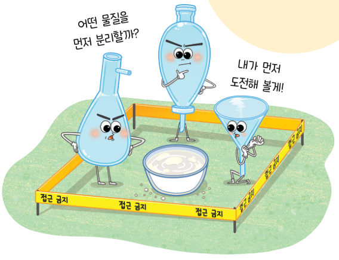
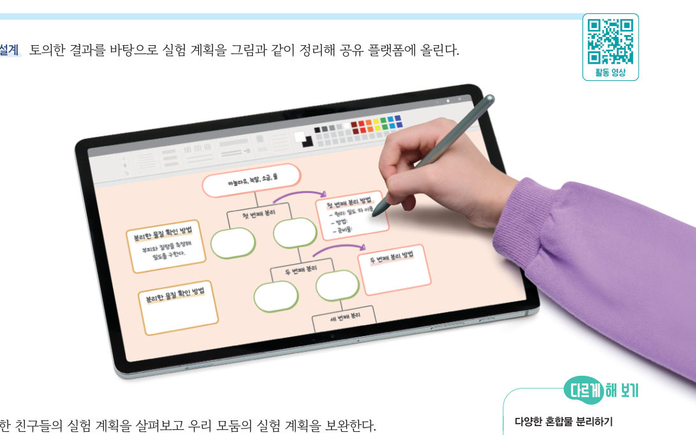

살아있는 교과서 · Ⅰ. 물질의 특성 · 2. 혼합물의 분리 · 03 34~36쪽 · 대단원 마무리
혼합물 분리 실험을
혼합물 분리 실험을
설계하고 수행하기
“어떤 물질을 먼저 분리할까?” “내가 먼저 도전해 볼게!” 카놀라유, 녹말, 소금, 물이 섞인 혼합물을 가상 실험대에서 직접 분리해 보고, 분리한 물질을 확인하는 방법까지 설계하자. 마지막에는 무인도에서 살아남는 방법을 찾아보자.
🎯 이 탐구를 수행하면 — 물질의 특성을 조사하고, 이를 바탕으로 혼합물을 분리해 그 결과를 확인하는 실험을 설계하고 수행할 수 있다.
탐구 전 활동배운 분리 방법 떠올리기 34쪽
1분리 방법과 이용하는 물질의 특성을 짝 지어 보자.
| 분별 깔때기로 물과 기름 분리 | |
| 가열해 녹였다가 냉각한 뒤 석출된 물질 거르기 | |
| 가열하여 먼저 기화한 물질을 찬물 속 시험관에서 액화 |
탐구 1각 물질의 특성 조사하기 34쪽
카놀라유, 녹말, 소금, 물이 섞인 혼합물을 분리하기 위해 각 물질의 특성을 조사해 표에 적어 보자. (단, 소금은 카놀라유에 녹지 않는다.)
⚠️ 유리 기구를 다룰 때 깨지지 않게 조심한다. 가열 장치에 화상을 입지 않도록 주의한다.
| 구분 | 카놀라유 | 녹말 | 소금(염화 나트륨) | 물 |
|---|---|---|---|---|
| 밀도(g/cm³) | 약 1.5 | 1.00 | ||
| 물에 대한 용해도 | 35.9(20 ℃) | - | ||
| 끓는점(℃) | 약 300 이상 | - | 1465 | |
| 녹는점(℃) | 약 −10 | - | 0 |
카놀라유·녹말 값은 대략적인 값이에요. 조사할 때는 온도·압력 같은 조건을 함께 적어요.
탐구 2~5가상 실험대에서 혼합물 분리하기 34~35쪽
초록 테두리 그릇(작업 중인 혼합물)에 실험 도구를 하나씩 적용해 보자. 네 물질을 모두 각각의 그릇에 순수하게 분리하면 성공! 순서를 잘못 고르면 어떤 일이 생기는지도 확인해 보자. 다른 그릇을 누르면 작업 그릇을 바꿀 수 있어요.

1탐구 설계 실험 계획을 순서대로 놓으시오.
- 거름 장치로 녹말 거르기
- 거름종이 위 녹말 말리기
- 분별 깔때기로 카놀라유 분리하기
- 소금물을 가열하여 물(증류)과 소금 분리하기
탐구 6분리한 물질 확인하기 35쪽
과정 1에서 조사한 물질의 특성을 바탕으로, 분리한 물질이 무엇인지 확인하는 방법을 골라 보자.
| 카놀라유 | |
| 녹말 | |
| 물 |
💬분리한 소금이 순수한 염화 나트륨인지 확인할 수 있는 방법을 물질의 특성을 이용해 설명해 보자.
💬정리해 볼까 친구들의 발표를 듣고 우리 모둠의 실험 계획과 결과에서 잘한 점과 개선할 점을 이야기해 보자.
다르게 해 보기 · 다양한 혼합물 분리하기
철가루, 플라스틱 조각, 염화 나트륨, 붕산 등이 섞인 혼합물을 분리하고, 분리한 물질을 확인할 수 있는 실험 계획을 세워 보자.
🧩 두 번째 블록 · 힌트 조각 3 (35쪽)
물이 남아 있는 녹말을 말리면 물이 증발해 ( )을/를 분리할 수 있다.
스스로 정리하기2. 혼합물의 분리 · 두 번째 블록 찾기 36쪽
2물질의 특성을 이용한 혼합물 분리
⑴ 밀도 차: 서로 섞이지 않는 액체 혼합물은 밀도가 큰 물질이 ( )에 위치하므로 분리 — 모래에서 사금 채취, 혈액 성분 분리
⑵ 용해도 차: 모두 녹였다가 냉각하면 온도에 따른 용해도 차가 ( ) 물질이 먼저 석출 — 사탕수수에서 설탕 분리
⑶ 끓는점 차: 가열하면 끓는점이 ( ) 물질이 먼저 기화 — 원유에서 휘발유, 등유, 경유 분리
⑷ 녹는점 차: 가열하면 녹는점이 ( ) 물질이 먼저 녹아 나와 분리 — 암석에서 금속 분리
⑵ 용해도 차: 모두 녹였다가 냉각하면 온도에 따른 용해도 차가 ( ) 물질이 먼저 석출 — 사탕수수에서 설탕 분리
⑶ 끓는점 차: 가열하면 끓는점이 ( ) 물질이 먼저 기화 — 원유에서 휘발유, 등유, 경유 분리
⑷ 녹는점 차: 가열하면 녹는점이 ( ) 물질이 먼저 녹아 나와 분리 — 암석에서 금속 분리
3혼합물 분리 실험 설계 및 수행
섞이지 않으면서 밀도가 다른 액체 혼합물은 (이)나 스포이트를 이용해 분리하고, 석출된 물질은 장치로 걸러 분리한다.
🧩 두 번째 블록 찾기 · 녹말과 물이 섞인 혼합물에서 어떻게 녹말을 분리할 수 있을까?
① 녹말과 물이 섞인 것은 혼합물이다. (28쪽) ② 녹말과 물의 혼합물을 가만히 두면 서로 섞이지 않고 녹말이 가라앉으므로 분리할 수 있다. (33쪽) ③ 물이 남아 있는 녹말을 말리면 물이 증발해 녹말을 분리할 수 있다. (35쪽)
세 조각을 모아 두 번째 블록 질문에 답해 보자. 블록 찾기 성공!
대단원 마무리물질의 특성을 이용해 무인도에서 살아남는 방법 찾기
친구 몇 명과 무인도에 고립되었다. 무인도에는 여러 종류의 야자나무가 숲을 이루고 있지만, 야자나무 열매는 찾을 수 없다. 이러한 가상의 상황에서 생존하기 위해 식량과 식수를 어떻게 구할 것인지 과학적 원리를 적용하여 방법을 찾아보자.
1식수 바닷물에서 마실 물을 얻는 방법을 물질의 특성을 이용해 고안해 보자.
2식량 야자나무에서 식량을 얻는 방법을 조사하고, 이용한 물질의 특성을 써 보자. (예: 사고야자 줄기 속의 녹말)
| 평가 기준 | 스스로 평가 |
|---|---|
| 물질의 특성을 이용해 야자나무와 바닷물에서 식량과 식수를 얻는 적절한 방법을 고안하였는가? | |
| 고안한 방법을 토대로 물질의 특성을 이용한 혼합물 분리 방법을 설명할 수 있는가? | |
| 과정·기능 물질의 특성을 이용하여 알맞은 실험 도구로 혼합물을 분리하고, 분리한 물질을 확인했는가? | |
| 가치·태도 실험을 설계하고 수행할 때 친구들의 의견을 긍정적으로 수용했는가? |
💬Ⅰ단원을 마치며 알게 된 점, 어려웠던 점, 더 알아보고 싶은 점을 써 주세요.
제출학생 정보 · 제출하기
모든 활동을 마친 뒤 제출하면 전체가 한 번에 채점되고 피드백이 나타나요. 답안은 선생님 스프레드시트(중2 탭)에 기록돼요.